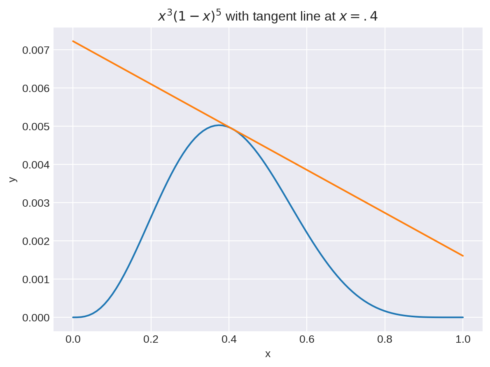
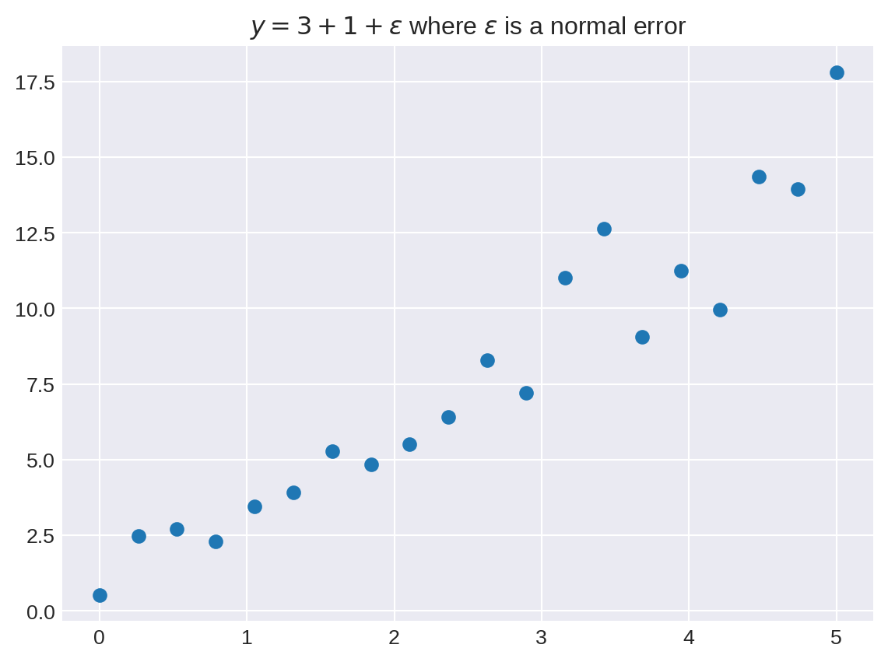
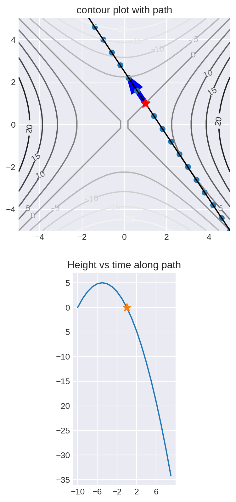

import numpy as np
import matplotlib.pyplot as plt
plt.style.use('seaborn-v0_8-dark')Key ideas from calculus
Fundamentals of Data Science
Key ideas from calculus
Why Calculus in data science?
The central application of calculus in data science is in the problem of “optimization.” ML algorithms generally ask for the “best fit” of something, and the “best fit” usually means finding the parameters where a measure of error, a loss function, is as small as possible.
(Differential) calculus is the most powerful tool we have for finding the minimal (or maximum) values of functions.
Calculus also plays a key role in Probability and Statistics, because questions about probability in continuous settings relies on the idea of an integral.
One-variable differential calculus
- Simple function with one input variable and one output variable
- Derivative measures rate of change of output with respect to input
- Famous formula: given a function \(f:\mathbf{R}\to\mathbf{R}\), the derivative is defined by \[ f'(x) = \lim_{h\to 0}\frac{f(x+h)-f(x)}{h} \]
Interpretations of the derivative
- “Slope of the curve”
- “Rate of change”
x=np.linspace(0,1, 100)
y=x**3*(1-x)**5
plt.plot(x,y)
1m = (y[41]-y[40])/.01
2ytan = y[40]+m*(x-x[40])
plt.grid()
plt.xlabel('x')
plt.ylabel('y')
plt.title('$x^3(1-x)^5$ with tangent line at $x=.4$')
im = plt.plot(x,ytan)- 1
-
Here we compute the (approximate) slope/derivative
mat the point(x[40],y[40]) - 2
- This is the equation of the line through that point with the computed slope.

Key facts:
- Derivative is positive means function is increasing
- Derivative is negative means function is decreasing
- Derivative is zero means a critical point, often a local maximum or local minimum.
An example
fig, axes = plt.subplots(1, 2, sharey="row")
fig.set_size_inches(8, 4)
# ----
x = np.linspace(0, 1, 100)
y = x**3 * (1 - x) ** 5
axes[0].plot(x, y)
t1 = axes[0].set_title(r"$f(x)=x^3(1-x)^5$")
axes[0].grid()
# ----
1yprime = (y[1:] - y[:-1]) / 0.01
axes[1].plot(x[1:], yprime)
axes[1].grid()
t2 = axes[1].set_title(r"$f'(x)$")- 1
-
The array
yhas the y values corresponding to the x values in the arrayx. So the differencey[1:]-y[:-1]is \(f(x+h)-f(x)\). Since there are 100 x values between 0 and 1, \(h=.01\).
Some key reminders from differential calculus
- The derivative is linear, so the derivative of a sum is the sum of the derivatives and the derivative \((af(x))'\) is \(af'(x)\).
- The derivative of a constant is zero.
- The derivative of \(x^{n}\) is \(nx^{n-1}\).
- The derivative of \(e^{x}\) is \(e^{x}\).
- The derivative of \(\log(x)\) is \(1/x\) (natural logarithm).
Notation
Sometimes we write \(f'(x)\), sometimes \(\frac{df}{dx}\).
The product rule
The derivative of a product of functions \(fg\) satisfies the product rule \[ (fg)'=fg'+f'g \]
The chain rule
The chain rule is a key fact from one variable calculus. Its simple form is
\[ \frac{d}{dt}f(x+th)|_{t=0}=hf'(x) \]
and more generally
\[ \frac{d}{dx}(f(g(x))) = f'(g(x))g'(x) \]
Functions of several variables
In data science, we generally want to look at functions that depend on many variables, rather than just one.
For example, let us consider the problem of finding the line of best fit to a collection of points \((x,y)\).
First we generate some random data to work with.
x=np.linspace(0,5,20)
1y=3*x+1+np.random.normal(0,2,size=x.shape[0])
plt.scatter(x,y)
plt.grid()
plt.title("$y=3+1+\epsilon$ where $\epsilon$ is a normal error")- 1
- Here we find \(y=3x+1+\epsilon\) where \(\epsilon\) is drawn from a normal random variable with standard deviation \(2\).
Text(0.5, 1.0, '$y=3+1+\\epsilon$ where $\\epsilon$ is a normal error')
The line of best fit has the equation \(y=mx+b\) where \(m\) and \(b\) are the unknowns. The “error” is \[ E(m,b) = \frac{1}{N}\sum_{i=1}^{N} (y_i-mx_i-b)^2 \]
The \(x_i\) and \(y_i\) are the data, and \(m\) and \(b\) are the things we want to find. So this is a function of two variables.
It is a (possibly very big) quadratic function of \(m\) and \(b\).
But in more general regression problems we may have many slopes \(m_{i}\) so our error depends on many variables.
In neural networks there may be billions of parameters.
Visualization of functions of two variables
Contour plots are a way to represent a function of two variables. For example suppose \(f(x,y)=3x^2+2xy+5y^22\).
fig,ax = plt.subplots()
x=np.linspace(-3,3,40)
y=np.linspace(-3,3,40)
1ax.set_aspect('equal')
2xx,yy = np.meshgrid(x,y)
z = 3*xx**2+2*xx*yy+5*yy**2
ax.contour(xx,yy,z)
ax.grid()- 1
- Why do you need this?
- 2
- meshgrid changes two one-dimensional arrays into two two dimensional arrays - examine them to see what happens.
from scipy.stats import norm
fig,ax = plt.subplots()
x=np.linspace(-10,10,50)
y=np.linspace(-10,10,50)
xx,yy = np.meshgrid(x,y)
z = 3*norm.pdf(np.sqrt((xx-2)**2+(xx-2)*(yy-3)+(yy-3)**2))-5*norm.pdf(np.sqrt((xx+3)**2+(yy+1)**2))
P=ax.contourf(xx,yy,z,levels=10)
Q=ax.contour(xx,yy,z,levels=np.linspace(-1,1,19),colors='black')
t=ax.clabel(Q,inline=True,fontsize=5)
t=ax.set_title("Contour Plot of sum of two Gaussians")Plotting in 3d
Generally 3d plots aren’t that useful, but sometimes you just really want one.
from mpl_toolkits.mplot3d import Axes3D
fig = plt.figure()
fig.set_size_inches(20,10)
ax = fig.add_subplot(211,projection='3d')
x = np.linspace(-5,5,30)
y = np.linspace(-5,5,30)
xx,yy = np.meshgrid(x,y)
z = norm.pdf(np.sqrt(xx**2+yy**2))
ax.plot_wireframe(xx,yy,z,cmap='gray')
ax = fig.add_subplot(212)
Q=ax.contour(xx,yy,z)
ax.clabel(Q)
ax.set_aspect('equal')
fig = plt.figure()
fig.set_size_inches(20,10)
ax = fig.add_subplot(211,projection='3d')
x = np.linspace(-5,5,30)
y = np.linspace(-5,5,30)
xx,yy = np.meshgrid(x,y)
z = xx**2-yy**2
ax.plot_wireframe(xx,yy,z,cmap='gray')
ax = fig.add_subplot(212)
Q=ax.contour(xx,yy,z,levels=10)
ax.clabel(Q)
ax.set_aspect('equal')
ax.grid()Vectors and functions
It’s useful to think of a function of multiple variables \(x_1,\ldots, x_n\) as a function of a vector \(\mathbf{x}=(x_1,\ldots, x_n)\).
If \(x_0\) is a point in \(\mathbf{R}^{n}\) (thought of as a vector) and \(v\) is another vector, then the points \[ \ell(t) = x_0+tv \]
trace out a line as \(t\) varies.
For example if \(x_0=(1,1)\) and \(v=(-2,3)\) then \[ \ell(t) = (1-2t,2+3t) \]
1x = np.array([1,1]).reshape(2,1)
v = np.array([-2,3]).reshape(2,1)
t=np.arange(-5,5,1)
pts = x+t*v
plt.grid()
plt.plot(pts[0,:],pts[1,:],color='black')
plt.plot([1],[1],marker="*",markersize=12,color='red')
plt.arrow(1,1,-2,3,color='blue',width=.4)
plt.scatter(pts[0,:],pts[1,:])
plt.title("Vector form of a line from (1,1) towards v=(-2,3)")
plt.xlabel('x')
_=plt.ylabel('y')- 1
- To see why x and v need to be column vectors, try this without the reshape and look at the error you get.
In this version, the vector \(v\) represents the velocity of a point travelling along the line. So the dots are the position of the object at different times \(t\).
If we scale \(v\) by a constant:
- the line stays the same
- the speed is different
The speed is \(\|v\|\).
Directional Derivatives
For a function of multiple variables, the directional derivative is the rate of change in a particular direction.
\[ D_{v}(f)(\mathbf{x}) = \frac{d}{dt}f(\mathbf{x}+t\mathbf{v})|_{t=0} \]
This means: how fast is \(f\) at time zero as you travel through space in a straight line with velocity \(v\) passing through point \(x\).
Depends on direction and magnitude of \(v\).
Suppose that \(f(\overline{x})=x_1^2-x_0^2\), that \(\mathbf{x}=(1,1)\) and that \(v=(-.4,.6)\) Then
\[ \mathbf{x}+t\mathbf{v} = (1-.4t,1+.6t) \]
and \[ f(\mathbf{x}+t\mathbf{v}) = (1-.4t)^2-(1+.6t)^2 \]
fig = plt.figure()
fig.set_size_inches(20,10)
ax = fig.add_subplot(211)
ax.set_title('contour plot with path')
x = np.linspace(-5,5,30)
y = np.linspace(-5,5,30)
xx,yy = np.meshgrid(x,y)
z = xx**2-yy**2
Q=ax.contour(xx,yy,z,levels=10)
ax.clabel(Q)
ax.set_aspect('equal')
ax.grid()
x = np.array([1,1]).reshape(2,1)
v = np.array([-.4,.6]).reshape(2,1)
t=np.arange(-10,10,1)
pts = x+t*v
ax.set_xlim((-5,5))
ax.set_ylim((-5,5))
ax.plot(pts[0,:],pts[1,:],color='black')
ax.plot([1],[1],marker="*",markersize=12,color='red')
ax.arrow(1,1,-.4,.6,color='blue',width=.2)
ax.scatter(pts[0,:],pts[1,:])
ax1 = fig.add_subplot(212)
ax1.set_aspect('equal')
ax1.set_xticks(np.arange(-10,11,4))
ax1.set_title('Height vs time along path')
ht = -(1+0.6*t)**2+(1-0.4*t)**2
ax1.plot(np.arange(-10,10,1),ht)
ax1.plot([0],[0],marker='*',markersize=10)
ax1.grid()
Partial Derivatives
The partial derivatives of a function are the special cases of the directional derivative in the direction of coordinate axes.
So if \(f\) is a function of \(\mathbf{x}=(x_0,\ldots, x_{n-1})\) and if \(\mathbf{e}_{i}\) is the vector \[ e_{i} = (0,0,\ldots,0,1,0,\ldots, 0) \] where the \(1\) is in the \(i^{th}\) position, then \[ \frac{\partial f}{\partial x_{i}}=D_{e_{i}}f. \]
You can compute the partial derivatives using calculus rules where you treat all of the variables except \(x_{i}\) as constants.
The vector chain rule
The vector chain rule says that \[ \frac{d}{dt}f(x_1(t),x_2(t),\ldots, x_n(t))=\frac{\partial f}{\partial x_1}\frac{d x_1}{d t}+\frac{\partial f}{\partial x_2}\frac{d x_2}{d t}+\cdots+\frac{\partial f}{\partial x_n}\frac{d x_n}{d t} \]
Here \((x_1(t),\ldots,x_n(t))\) can be thought of as a path where the \(x_i\) vary with time \(t\).
The gradient
Suppose that \(f\) is a function of variables \(x_1,\ldots, x_n\). The gradient of \(f\), written \(\nabla f\), is a vector valued function where
\[ \nabla f (x) = \left[\begin{matrix} \frac{\partial f}{\partial x_0} & \frac{\partial f}{\partial x_1} & \cdots & \frac{\partial f}{\partial x_n} \end{matrix}\right] \]
The gradient of \(f\) gives a vector at each point.
Key property of the gradient
Theorem: If \(v\) is any vector, then the directional derivative \(D_{v}(f)=\nabla f \cdot v\). As a result of this fact:
- The gradient points in the direction where \(f\) increases most rapidly.
- \(-\nabla f\) points in the direction where \(f\) decreases most rapidly.
- The gradient is perpendicular to the contour lines of the function.
- The gradient is zero at local minima and maxima of a function (but possibly also at other places)
These facts follow from the chain rule and properties of the dot product.
First of all, \[ D_{v}(f)(\mathbf{x}) = \frac{d}{dt}f(\mathbf{x}+t\mathbf{v})=f(x_1+tv_1,x_2+tv_2,\ldots, x_n+tv_n)|_{t=0} \]
From the vector chain rule this is the same as
\[ D_{v}(f)(\mathbf{x}) = \frac{\partial f}{\partial x_1}v_1+\frac{\partial f}{\partial x_2}v_2+\cdots+\frac{\partial f}{\partial x_n}v_{n}|_{t=0} \] which is
\[ (\nabla f)(\mathbf{x})\cdot \mathbf{v}. \]
But the dot product satisfies
\[ (\nabla f)(\mathbf{x})\cdot \mathbf{v} = \|(\nabla f)(\mathbf{x})\|\|v\|\cos(\theta) \]
where \(\theta\) is the angle between the gradient and the vector \(v\). This is maximum when \(\theta=0\), and minimum when \(\theta=\pi\).
To see the significance of this, check out this page..
Functions from \(\mathbf{R}^{m}\) to \(\mathbf{R}^{n}\) and their derivatives
The most general situation we might want to consider is a function that converts a point in \(\mathbf{R}^{m}\) to a point in \(\mathbf{R}^{n}\):
\[ F:\mathbf{R}^{m}\to \mathbf{R}^{n} \]
Here is an example. Suppose we have \(28\times 28\) images represented as arrays of pixel values. And suppose that we know that this image is a handwritten number between \(0\) and \(9\).
An image recognition neural network takes such an image an outputs a vector of length \(10\) of the form \((p_0,\ldots, p_{9})\) where \(p_i\) is the probability that the image represents the digit \(i\).
This neural network is a function \(F:\mathbf{R}^{784}\to \mathbf{R}^{10}\).
Such a function is actually given by \(10\) (or, more generally, \(n\)) “coordinate functions” \(f_{i}\), each of which is a function of \(m\) variables. So the neural network function \(F\) consists of functions \[ p_{i} = F_{i}(x_0,\ldots, x_{783})\quad i=0,\ldots, 9 \]
Each of these functions has a gradient which measures how \(p_{i}\) changes if you modify the \(x_i\). The total derivative of \(F\) is made up of all of these gradients. You can think of this as a column vector of row vectors: \[ DF = \left[\begin{matrix} \nabla F_{0} \\ \nabla F_{1} \\ \cdots \\ \nabla F_{n}\end{matrix}\right] \]
where each \(\nabla F_{i}\) is a row with \(m\) entries.
But this is really a matrix called the total derivative \(DF\) of \(F\) of size \(n\times m\).
The total derivative tells us how a small step in \(\mathbf{R}^{m}\) translates to a step in \(\mathbf{R}^{m}\) when you apply the function \(F:\mathbf{R}^{m}\to mathbf{R}^{n}\).
Linear functions
A very special case of a function from \(F:\mathbf{R}^{m}\to mathbf{R}^{n}\) is the situation where \[ F(x) = Ax \] for an \(n\times m\) matrix.
In this special case, the total derivative \(DF\) of \(F\) is the matrix \(A\).
The chain rule in the general case
If \(F:\mathbf{R}^{m}\to\mathbf{R}^{n}\) is a function, and \(G:\mathbf{R}^{n}\to\mathbf{R}^{k}\) is another function, then it makes sense to compute \(G(F(x))\) for \(x\in \mathbf{R}^{m}\), and the result is in \(\mathbf{R}^{k}\).
The chain rule in general says that the derivative of \(G(F(x))\) is the product of the matrices corresponding to \(DG\) and \(DF\). Here \(DG\) is \(k\times n\) and \(DF\) is \(n\times m\) so \((DG)(DF)\) is \(k\times m\) as it should be.